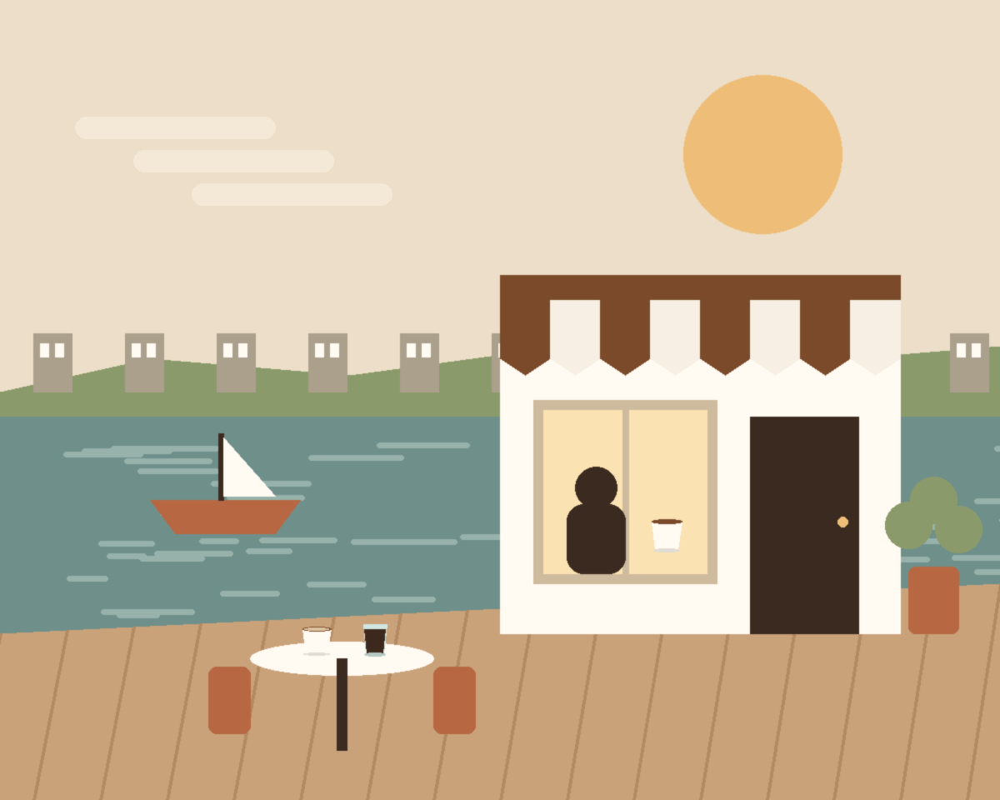

河边的一张桌 · 自 2018
港湾咖啡
在港湾，慢慢喝一杯。手冲咖啡、当日烘焙，和一段不用赶路的时间。
营业时间
周一至周五 08:00 至 18:00，周末 09:00 至 19:00
地址
上海市杨浦区沿江路 18 号，渡口往东 200 米

河边的一张桌 · 自 2018
在港湾，慢慢喝一杯。手冲咖啡、当日烘焙，和一段不用赶路的时间。
周一至周五 08:00 至 18:00，周末 09:00 至 19:00
上海市杨浦区沿江路 18 号，渡口往东 200 米
